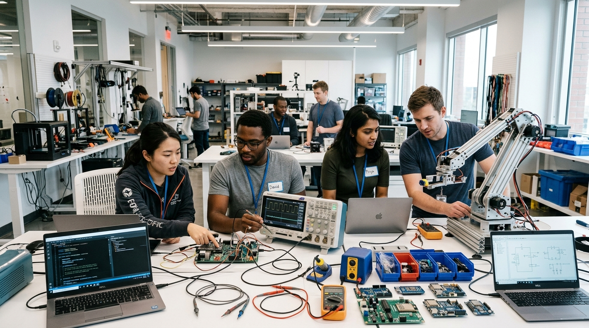

How do we prepare for a future where technology keeps changing?
The answer is not: “Everyone should learn to code.”
The answer is also not: “AI will solve everything.”
Both ideas are too simple. The real solution is to build people, companies, and cities that can continuously adapt. The future belongs to those who can learn, build, question, repair, and redesign.
1. Individuals Must Become Adaptable: The 5 Layers
Technology changes too quickly for one skill to remain valuable forever. Instead of learning only one programming language, people should build layers of enduring capability:
2. Learn to Work With AI (Human + AI)
The future worker should not compete with AI in every task. They should learn how to use AI. Instead of Human versus AI, we should aim for Human + AI:
- AI can assist with: Research, coding boilerplate, data analysis, documentation, regression testing, automation, and brainstorming.
- Humans remain responsible for: Strategic goals, ethical judgment, accountability, high-stakes decisions, system architecture, and evaluating real-world outcomes.
3. Companies Must Change: The New Team Structure
Companies should not respond to AI by asking only: “How many employees can we replace?”
A better question is: “How can humans and machines divide work intelligently?”
4. Chennai Should Diversify
Chennai must not build its entire future around one form of IT outsourcing. Instead, Chennai must cultivate cross-sector pollination:
It should be: Chennai → Technology → Every Major Industry.
5. The Chennai 2035 Model
Imagine Chennai in 2035. Instead of being known only for IT services, Chennai becomes a technology ecosystem connecting AI with automotive manufacturing, medical technology, electronics, semiconductor design, port logistics, and global R&D. Technology becomes the common layer connecting these industries.
6. Education Reform: Asking the Right Questions
Traditional education focuses heavily on memorizing information. The future requires people who can use information. Classrooms must ask:
- “How did you solve the problem?”
- “Can you build something?”
- “Can you explain it clearly?”
- “Can you improve it?”
7. Protect Critical Digital Infrastructure & Eliminate Single Points of Failure
Systems supporting hospitals, banking, electricity, water, and transit are too critical to fail. They require automated backups, living documentation, and disaster recovery procedures. Critical operational knowledge must never reside exclusively inside one person's head.
8. Hardware and Physical Engineering Skills
A resilient technology ecosystem cannot depend only on software. We also need electronics engineers, electrical specialists, robotics engineers, and embedded systems architects:

Interactive Diagnostic: Career Resilience
Answer 3 quick questions to receive a tailored re-skilling roadmap.
Track 1: Cyber-Physical & Hardware Prototyping Specialist
Pivot away from high-level SaaS/web wrappers toward physical hardware. Master embedded chips that control motors, pumps, power inverters, and agricultural sensors.
The Three Levels of Adaptation
Individual
- Learn continuously
- Build enduring fundamentals
- Partner with AI
- Develop domain knowledge
- Learn to solve real problems
Company
- Automate responsibly
- Build AI-native products
- Invest in people
- Protect critical systems
- Strong engineering practices
City (Chennai)
- Diversify industries
- Invest in STEM education
- Support deep-tech R&D
- Build resilient infrastructure
- Attract global technology centers
What If Coding Really Disappeared?
If coding itself completely disappeared, we would rebuild capability from the foundations: preserving software documentation, training system maintainers, strengthening electrical and mechanical engineering, developing low-code solutions, and maintaining manual alternative procedures.
The Final Message
The future should not be: Humans versus AI.
It should not be: IT versus other industries.
And it must not be: Technology versus humanity.
The goal is not to protect every existing job; it is to make people capable of creating the next jobs. The goal is not to protect every existing technology; it is to build the ability to create the next technology.
Technology isn't disappearing.
Our definition of technology is changing.
The programmer of the past wrote instructions. The engineer of the future designs systems. The company of the past sold software; the company of the future sells outcomes. And the city of the future will survive because it can continuously learn, adapt, and build.
“The future doesn’t belong to the people who predict it.
It belongs to the people who prepare for it.”